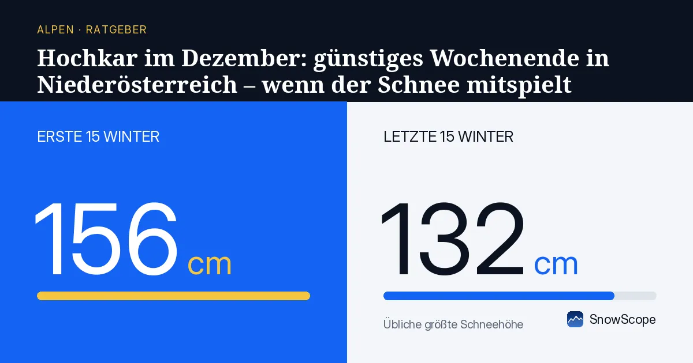

Hochkar im Dezember: günstiges Wochenende in Niederösterreich – wenn der Schnee mitspielt
Hochkar kann sich für einen Dezember-Wochenendtrip von Wien aus lohnen, aber Schnee ist nicht garantiert. Am typischen 15. Dezember liegen auf Mittelhöhe (1583 m) 38 cm, in 63 % der Winter gab es in der Woche vom 15.–21. Dezember 30 cm oder mehr. Die Preisseite ist einfach: Tageskarten online kosten ab EUR 32,90 an ruhigen Tagen.
Die Live-Schneeprognose für Hochkar in der SnowScope-AppSchneehöhen, Pulverschnee-Alarme und 3D-Karte, gratis.
Wenn der Dezemberschnee dick genug ist
Das Hochkar erhebt sich auf 1788 m, der höchste Lift in Niederösterreich. Über 46 Winter seiner Aufzeichnungen war der Boden an der Talstation (1378 m) am 15. Dezember nie aper, es liegt also immer Schnee. Entscheidend ist, ob genug zum Fahren vorhanden ist.
Die Zuverlässigkeit verschiebt sich im Lauf des Monats. In der ersten Dezemberwoche (1.–7. Dez.) hatten nur 43 % der Winter an der Talstation 30 cm oder mehr. Mitte Dezember springt dieser Anteil auf 52 %, und bis Weihnachtswoche erreicht er 61 %. Auf Mittelhöhe sind die Chancen besser: 59 % in der Woche 8.–14. Dezember und 74 % bis Weihnachtswoche.


Die Höhe macht den Unterschied
Die Bergspitze erzählt eine andere Geschichte. Am typischen 15. Dezember liegen am Gipfel (1788 m) 49 cm, gegenüber 32 cm an der Talstation und 38 cm auf Mittelhöhe. In 72 % der Winter hatte die Spitze in der Woche 15.–21. Dezember 30 cm oder mehr, in der Weihnachtswoche steigt das auf 80 %.
Die Talstation ist der schwache Punkt. In dünnen Jahren (1 von 10) liegen dort am 15. Dezember nur 8 cm. Wenn du hingehst, fahr zuerst die oberen Lifte und Pisten, solange die Abfahrtsbedingungen am besten sind.
Der Langzeittrend
Der Dezemberschnee auf diesem Berg ist dünner geworden. Auf Mittelhöhe lag der Durchschnitt in den ersten 15 Wintern der Aufzeichnung (1980–81 bis 1994–95) bei 51 cm, in den letzten 15 Wintern (2011–12 bis 2025–26) fiel er auf 29 cm. Der letzte Winter brachte am 15. Dezember nur 2 cm und am Heiligabend 3 cm.
Das zählt für die Planung. Eine zuverlässige Dezemberwoche hier ist jetzt die Ausnahme. Das Zeitfenster ist ab Weihnachtswoche, wenn ältere Schneemuster noch 74 % Chancen auf 30 cm auf Mittelhöhe liefern.
Kosten und Zeitpunkt
Das Hochkar nutzt vollständig dynamische Preise in seinem Online-Shop. Tageskarten für Erwachsene im Dezember 2026 reichten von EUR 32,90 an ruhigen Tagen bis EUR 47,90 an Spitzentagen. Die offizielle Website sagt, dass die Online-Preise etwa 15 % billiger sind als am Schalter.
Es gibt keinen beworbenen Festpreis für Mehrtags-Tickets, was Sinn macht: Die meisten Besucher kommen für einen Tag oder ein Wochenende. Entscheide dich in der gleichen Woche, in der du fahren möchtest, beobachte die Vorhersage und SnowScope, dann buche einen ruhigen Tag online.
Lachtal: die Alternative gleich nebenan
Lachtal in der Steiermark liegt 50 km entfernt mit einer höheren Talstation (1572 m) und höherem Gipfel (2199 m). Seine Mittelhöhe (1885 m) hat am typischen 15. Dezember 46 cm, und 72 % der Winter brachten 30 cm in der Woche 15.–21. Dezember – etwas zuverlässiger als Hochkar. Eine Tageskarte kostet EUR 62.
Für eine günstige Tagesfahrt von Wien ist Hochkar preislich überlegen. Für ein Wochenende, bei dem Schnee das Wichtigste ist, geben die Höhenlage des Lachtals bessere Chancen, allerdings zu höherem Preis.
Wie es funktioniert
Plane kurzfristig, nicht im Voraus. Anfang Dezember ist ein Glücksspiel; peile die Woche vor Weihnachten oder später an. Buche online für einen Wochentag, wenn die Preise am niedrigsten und die Schneeprognose sicher ist.
Prüfe vor der Fahrt den Lawinenbericht des Lawinenwarndienst Niederösterreich (lawinen.report), wenn du die markierten Pisten verlassen möchtest. Die Straße ist eine Bergstraße: Montiere Winterreifen nach Schneefall.
Tipps für Skifahrer
- Beobachte die Vorhersage für die Woche, die du ins Auge fasst, nicht einen Monat voraus. Dünne Dezember sind hier jetzt häufig; buche nur, wenn SnowScope 30 cm oder mehr auf Mittelhöhe zeigt.
- Kaufe online und wähle einen ruhigen Wochentag. Dynamische Preise sind am niedrigsten, wenn die Nachfrage gering ist.
- Fang bei den oberen Liften an. Die Bergspitze ist im Dezember die zuverlässigste Höhe.
- Bring Winterreifen mit und prüfe den Lawinenbericht, wenn du Steilfahrten machst.
- Wenn der Dezember dünn aussieht, warte auf Januar, wenn die Schneetiefe auf Mittelhöhe typischerweise 61 cm erreicht.
Zu diesen Zahlen
Die Schneehöhen der Skigebiete sind der meiste Schnee in den oberen Hängen am angegebenen Tag; es sind Schätzungen für eine Fläche, keine Messung an einem Punkt. Prognosen können sich ändern. Lies vor dem Freeriden immer den offiziellen Lawinenlagebericht.
Offizielle Lawinenlageberichte: Lawinenwarndienst Niederösterreich
Diesen Bericht zitieren
Für Forschung, Lehre oder Presse: Zahlen und Grafiken sind unter CC BY 4.0 mit dieser Quellenangabe frei nutzbar.
SnowScope (2026), Hochkar im Dezember: günstiges Wochenende in Niederösterreich – wenn der Schnee mitspielt, https://snowscope.app/blog/de/2026/11/hochkar-december-skiing-vienna-weekend-budget.html, abgerufen am 2026-11-14
SnowScope (Atlas Labs). (2026, November 14). Hochkar im Dezember: günstiges Wochenende in Niederösterreich – wenn der Schnee mitspielt. SnowScope snow reports. https://snowscope.app/blog/de/2026/11/hochkar-december-skiing-vienna-weekend-budget.html
BibTeX
@misc{snowscope2026hochkardecemberskiingvie,
author = {{SnowScope (Atlas Labs)}},
title = {Hochkar im Dezember: günstiges Wochenende in Niederösterreich – wenn der Schnee mitspielt},
year = {2026},
month = nov,
howpublished = {\url{https://snowscope.app/blog/de/2026/11/hochkar-december-skiing-vienna-weekend-budget.html}},
note = {Published 2026-11-14 20:11 UTC; accessed 2026-11-14}
}· CC BY 4.0 · Methoden, Daten und Werkzeuge →
Hochkar: Schnee und Temperatur nach Höhe, dieser Winter vs letzter (Werkzeuge) →
Hochkar folgen
Gratis: eine Nachricht, wenn Neuschnee kommt, und jeden Morgen die Vorhersage.